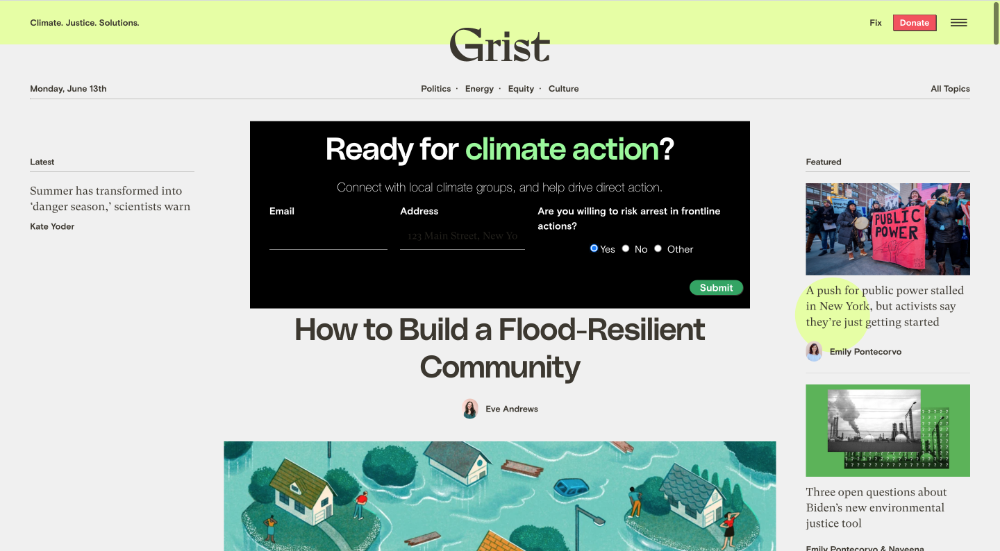
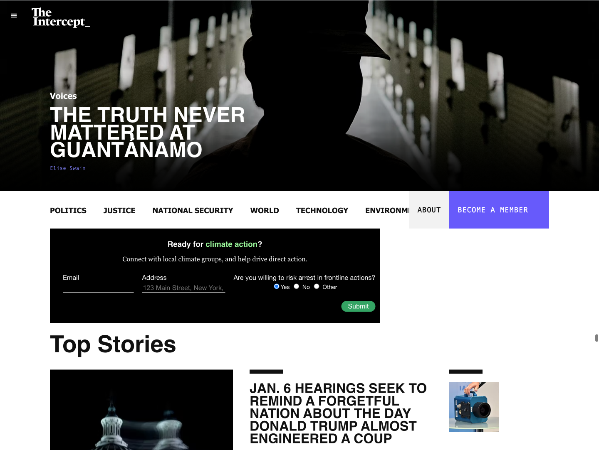
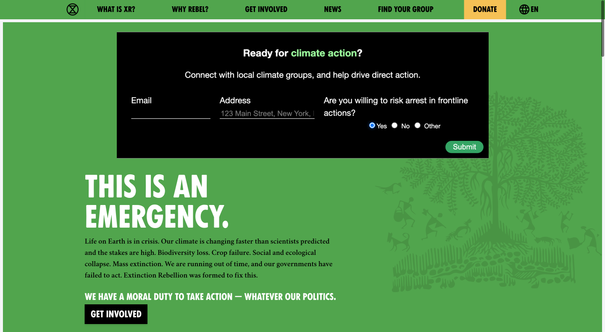
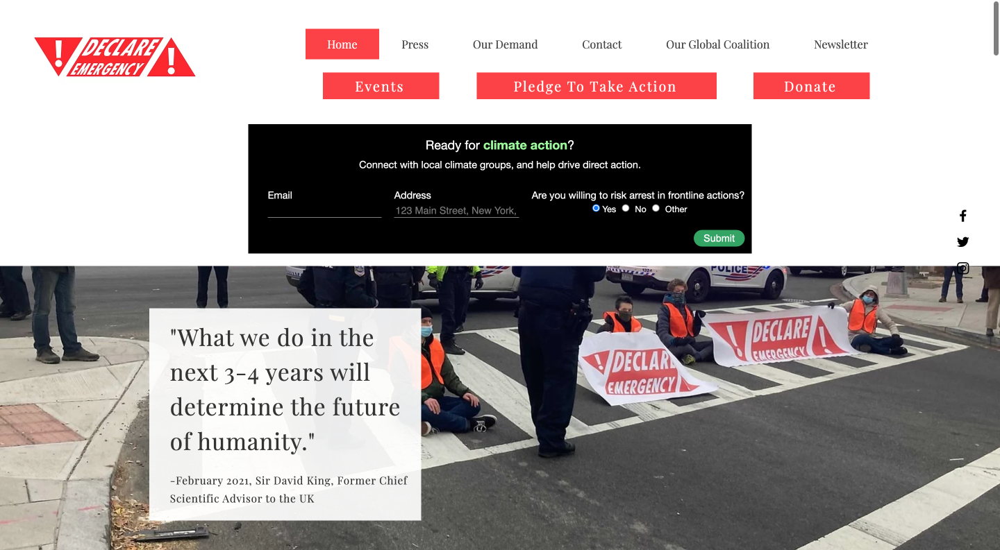
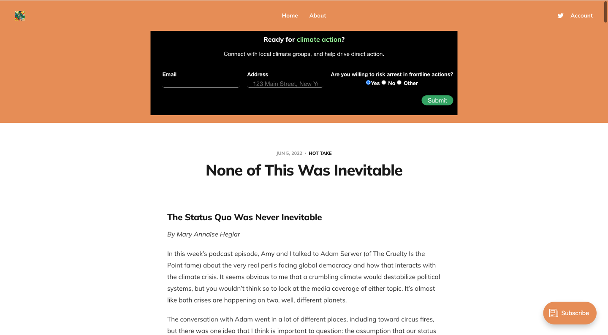
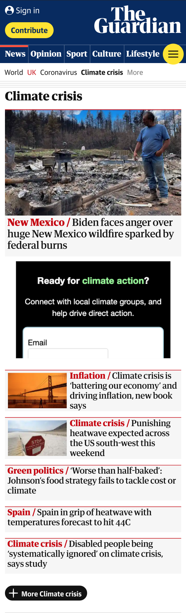
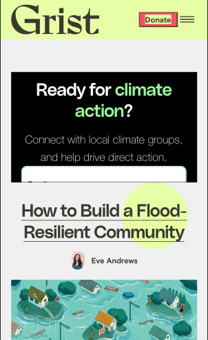

This is a banner that can be embedded on any page (e.g. an organization website, a blog, a news site) in a single line of code:
When people hit "submit", they can recieve automatic emails introducing them to groups in their area – helping them onboard into, and helping organizations connect with new members.
This doesn't require anything from organizations. They can keep their existing processes, and get the benefit of new members coming to their inbox.
The point is helping people onboard direct action and helping organizations mobilize more people — connecting with each other, wherever they are.
What this could look like on Grist
To embed this banner on your website, just copy <script src="https://climatewidget.netlify.app/dist.js"></script>
and paste it into your HTML code.
(This is still just a demo, and the form data isn't submitted anywhere — but the embed works successfully, and you can try it on your own page. All we need is organizations who want to use this to make it happen for real!)
Want to try this? Questions or feedback? Anything else?
Write to contact@sambutler.us
The Intercept
Extinction Rebellion
Declare Emergency
Hot Take Podcast
The Guardian (mobile)
Grist (mobile)
